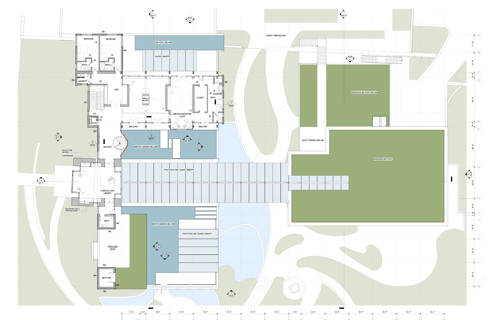
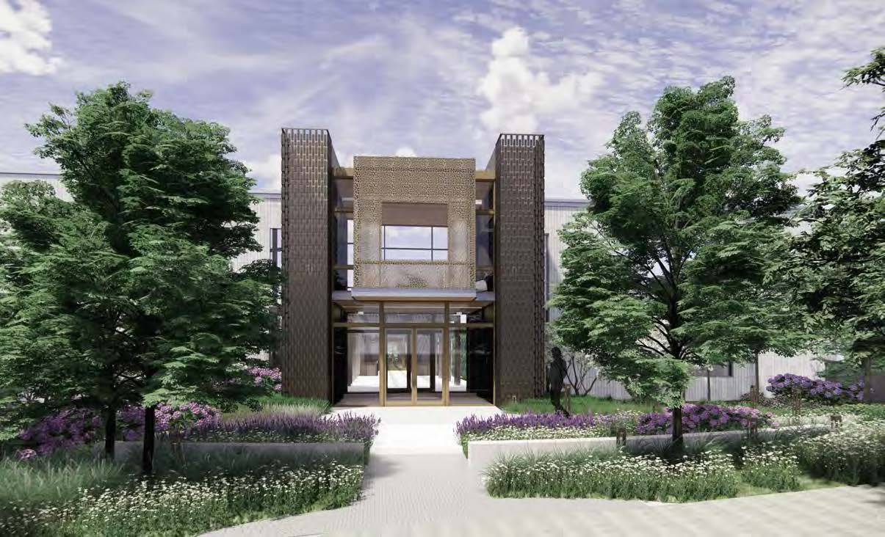
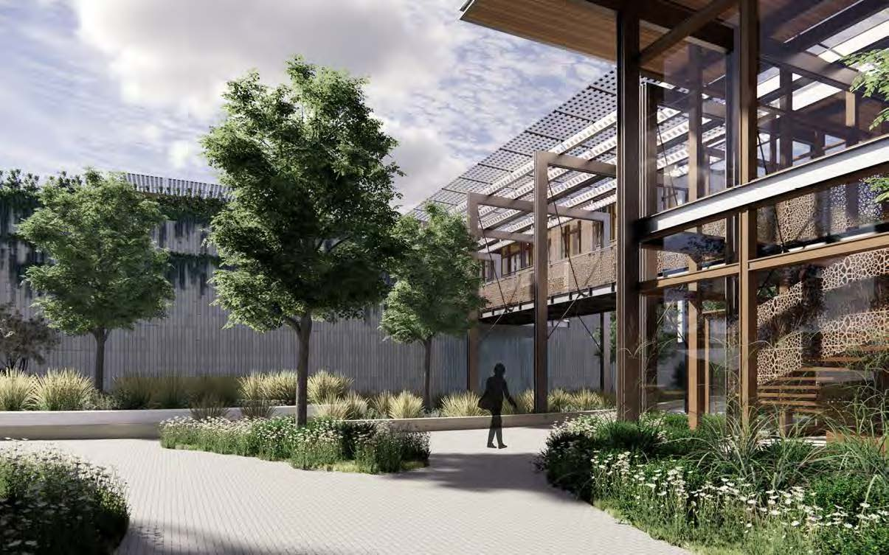
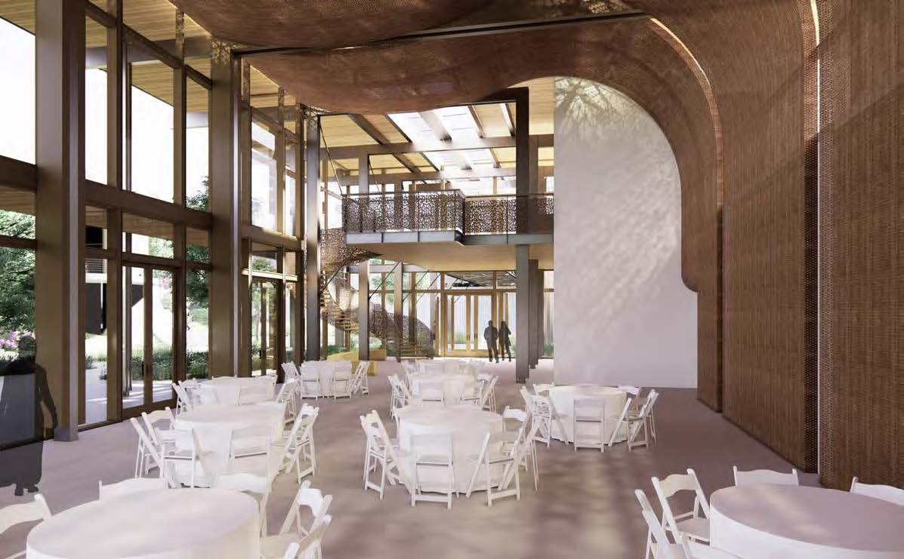

Architecture / Residence & Event Center
VU Residency and Event Center
Vanderbilt University / Nashville, Tennessee

- Practice
- EOA Architects, PLLC
- Client
- Vanderbilt University
- Team
- 5 people
- My role
- Project architect; produced all renderings, contributed to drawing deliverables, and participated in owner, architect, contractor, and consultant coordination meetings.
- Sustainability goal
- Targeting LEED Platinum certification
A garden within a garden
The Vanderbilt University Residence and Event Center brings together living, gathering, and landscape. EOA Architects developed the project from feasibility study through design development, with the garden serving as an organizing idea for both the site and the building.
An outer garden welcomes guests and students, while an arbor and water garden create a more intimate setting for the residence. These nested outdoor spaces connect the university's public life with moments of reflection and rest.
{kind=link}

{kind=link}

Design / Arrival & Threshold
The Pillar of Studies
The entry portal marks a transition from the energy of campus life to a quieter residential environment. Its vertical proportions establish a clear point of arrival, with planting framing the approach.
The portal gives physical form to the project's educational and reflective ambitions, linking the university's identity with the experience of entering the residence.
{kind=link}

Structure / Material & Sustainability
Timber warmth, steel precision
The proposed structure combines mass timber and steel. Their expression gives the building a clear rhythm of bays while bringing warmth to its gathering spaces.
Working with structural engineers and contractors helped inform the design. Planted roofs, photovoltaic elements, and the relationship between building and landscape support the project's LEED Platinum ambition.
{kind=link}
